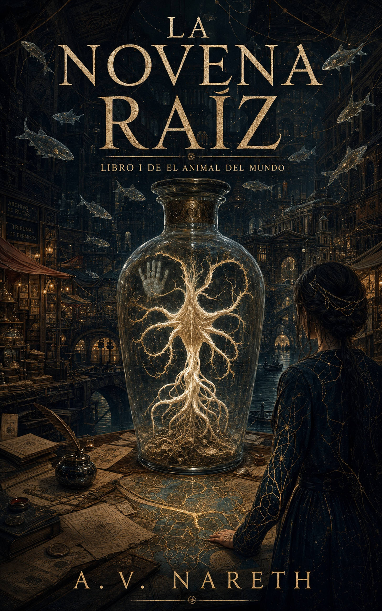

Gratis por tiempo limitado en Kindle
La Novena Raíz
Libro I de El Animal del Mundo · A. V. Nareth
Fantasía oscura en español: una ciudad de permisos imposibles, criaturas originales, intriga política y una raíz encerrada en vidrio. Si te gustan las sagas con mundos raros, misterio y mitología propia, este es el momento de entrar.
Enlace directo del libro: https://www.amazon.com/dp/B0H1YTYWXV
Tambien disponible para compartir como
libro gratis Kindle,
fantasia oscura en espanol
y free Spanish fantasy Kindle book.
Abrir enlaces rapidos para compartir.